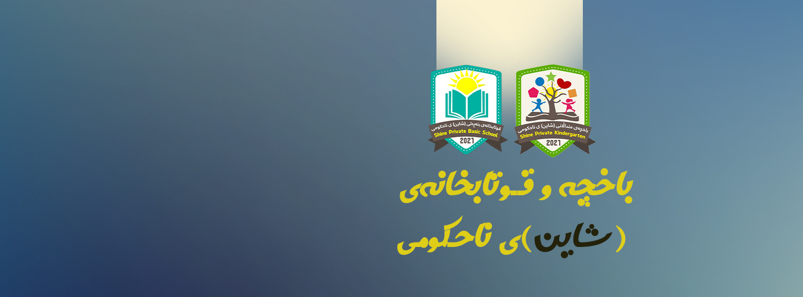

Acadamic Skills and Experince
Experince
I have been either teaching or learning higher education since 1999. these are my contributions to the world over all:
- of Physics, Peshraw High Secondary School , Chamchamal, Kurdistan of Iraq from 1999 to 2011
- Head of Laboratories Department in Directorate of Education in Chamchamal, Kurdistan of Iraq from 2008 to 2011
- Lecturer, Department of General Science, College of Education and Natural Sciense, Charmo University, Chamchamal, Kurdistan of Iraq from 2016 to 2018
- Assistant Lecturer, Department of Oil, Gas and Energy Managment, College of Public Administration and Natural Resource Management, Charmo University, Chamchamal, Kurdistan of Iraq from 2016 to 2018
- Lecturer, Electronic and Instrumentation Program, School of Ocean Engineering Technology and Informatics, Universiti Malaysia Terengganu, Malaysia from 2018 to 2020
- Lecturer, Department of General Science, College of Education and Natural Sciense, Charmo University, Chamchamal, Kurdistan of Iraq from 2020 to 2022

Training and Workshops
Although, I have a little experince in teaching students and managing some labs I have attended some workshops too, I assume they were very beneftial. They are:
- Managing and deal with equipment – through work in mechanic shop in chamchamal – 1988 – 2003
- Teaching aid method for trainer - 2009 – 2010 - GEO project – Lebanon.
- Participation in literacy courses method and how deal with adult - 2006 and 2009 NDI
- Special study for organization work and community mobilization – 2009 – 2011 NPA
What do I do for know
I am know a teacher at the same high school that I used to teach since 1999. In addition, me and with some of my friends worked to open a private school that could provide a constant acadamic lessons and creating job oportunities in the town of Chamchamal. The schools name is Shine, and it is doors has been open since the fall of 2021
